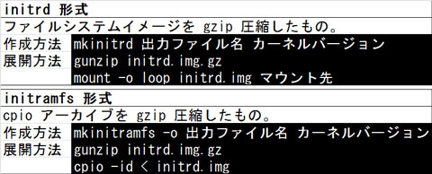

- 問題ID : 21764 Linuxカーネルのコンパイル
- 履歴
正解
システムの起動時に用いられる
メモリ上にファイルシステムを展開し、そこでカーネルを動作させてから本来のファイルシステムをルートにマウントし直す
解説
各選択肢について検討します。
初期 RAM ディスクはシステムのブートプロセスを段階的に行うためのものですから、「システムの起動時に用いられる」は正しいです。
「メモリ上にファイルシステムを展開し、そこでカーネルを動作させてから本来のファイルシステムをルートにマウントし直す」もこの通りです。
「最近のディストリビューションでは initrd 形式が用いられる」は誤りで、最近では initramfs 形式が使われます。
「メインのファイルシステム上にマウントして用いる」も誤りです。初期 RAM ディスクの内容は一旦ルートファイルシステムとしてマウントされます。本来のファイルシステムの一部としてマウントして使うわけではありません。
「特殊なファイルフォーマットであるため、専用の展開コマンドが存在する」も誤りで、どちらの形式も一般的な形式です。特殊なコマンドは必要なく、gunzip, mount, cpio といった汎用のコマンドを使って展開が可能です。
参考
初期 RAM ディスクは、システム起動時に仮の環境としてまずメモリ上にファイルシステムを展開し、そこでカーネルを動作させてから本来のファイルシステムをルートにマウントし直す、といった段階的なブートを実現する機能です。
各
種モジュールや機能を実現するためには、本来のファイルシステムが使用できなければなりませんが、システム起動直後にはファイルシステムにアクセスできる
環境が整っていません。つまり、カーネルが起動の最終段階で、本来のファイルシステムにアクセスでき、必要なモジュールをロードしたり、複雑なシステム、
例えばLVMサブシステムなどを使用できるようにしたりするお膳立てをすることになります。
高度な機能を使うにはまずカーネルを動作させなければならないので、仮の環境でまずカーネルを動かして、それから本来の環境をブートさせようという発想です。
そのためには仮のファイルシステム環境そのものを保存したイメージファイルが必要になりますが、その形式に2種類があります。initrd 形式と initramfs 形式です。
現在では cpio アーカイブを gzip で圧縮した initramfs 形式の方がよく利用されています。
両形式の基本的な扱い方の違いは以下をご参照ください。

また、initramfs 形式の初期 RAM ディスクは dracut コマンドでも作成できます。
書式：dracut 出力ファイル名 カーネルバージョン
以下は実行例です。
# dracut initramfs.img `uname -r`